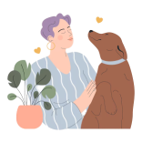
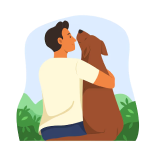

Porque Adotar?
Os cães trazem benefícios à saúde, tanto mental quanto física,
ajudando a reduzir o estresse e promovendo atividades como caminhadas e brincadeiras.
Eles oferecem alegria, companhia e conforto emocional. Em resumo,
adotar é um ato de amor e empatia que transforma vidas.
A do cão e a sua! criando uma amizade verdadeira e enriquecedora.
Nesse exato momento,
existem milhares de
doguinhos esperando
um humano
para
chamar de seu.

E não há recompensa maior
do que vê-los se tornando
aquela coisinha alegre e
saudável depois de uma
boa dose de cuidado e
carinho.

Pensando bem, a
pergunta é outra:
se você pode mudar o
destino de um animal de
rua,
por que não faria
isso?